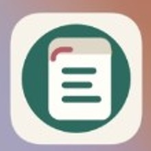
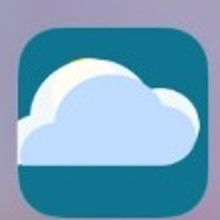

Aplikácie & nástroje
Moje aplikácie
Praktické webové aplikácie pre prácu, učenie, plánovanie a každodenný život.
S1
StempelnOne
Digitálna evidencia pracovného času pre firmy a tímy.
Čítanka
Čítanie, slovná zásoba a učenie nemčiny v jednej aplikácii.
Küchenplan
Týždenné menu, recepty, alergény a nákupné zoznamy pre škôlkovú kuchyňu.
Lístoček
Jednoduché zoznamy a praktická organizácia každodenných úloh.
Stempeln
Jednoduchšia aplikácia na zaznamenávanie príchodov a odchodov.
CigApp
Jednoduchý osobný tracker pre každodenné používanie.

Moje dni
Osobná aplikácia na prehľad dní a každodenných záznamov.
Zatiaľ nie je publikovaná
Super počasie
Jednoduchý prehľad počasia s dôrazom na najdôležitejšie informácie.
Zatiaľ nie je publikovaná